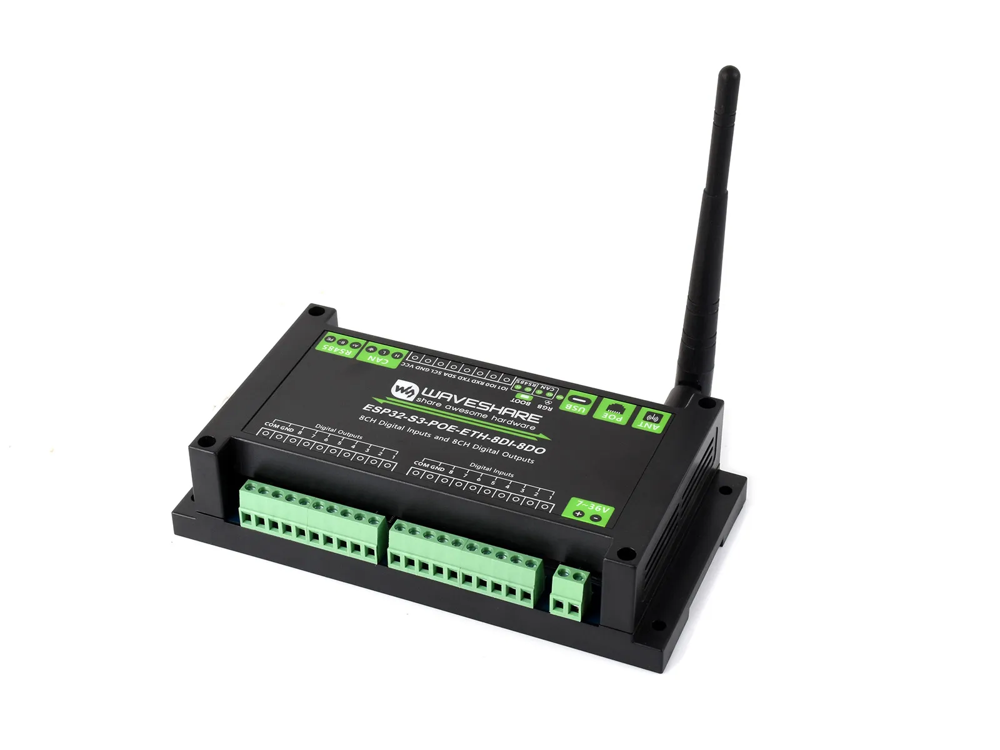
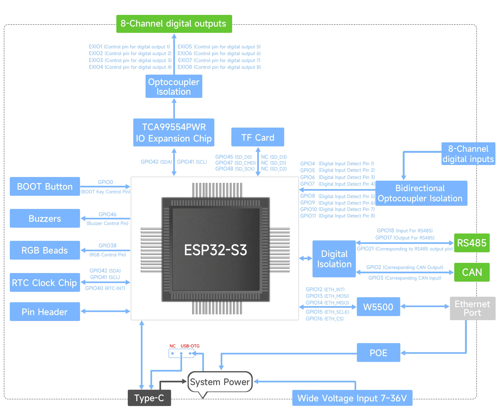

Inleiding
Deze documentatie beschrijft de PlatformIO-firmware voor het Waveshare ESP32-S3-POE-ETH-8DI-8DO board. Het board is gebaseerd op de ESP32-S3-WROOM-1U-N16R8 module (16 MB flash, 8 MB PSRAM) en heeft onder andere:
8 digitale ingangen (DIN) en 8 digitale uitgangen (Dout, via een TCA9554 I/O-expander)
RS485 en CAN (TWAI)
W5500 Ethernet (met PoE-voeding)
WiFi en Bluetooth LE
PCF85063 real-time clock (RTC)
micro-SD-kaartslot
RGB-led en zoemer


Het ESP32-S3-POE-ETH-8DI-8DO board. Bron: Waveshare documentatie.
Blokschema
Het blokschema laat zien welke GPIO-pinnen van de ESP32-S3 met welke onderdelen verbonden zijn. Dezelfde pinnen staan in de headers van de Library-referentie.


Blokschema met de GPIO-toewijzing. Bron: Waveshare documentatie.
Onderdeel |
Aansluiting |
Library-module |
|---|---|---|
Digitale uitgangen 1–8 |
TCA9554 EXIO1–EXIO8 (I²C) |
|
Digitale ingangen 1–8 |
GPIO 4–11 |
|
I²C (TCA9554, RTC) |
SDA GPIO 42, SCL GPIO 41 |
|
RTC PCF85063 |
I²C, interrupt GPIO 40 |
|
RS485 |
TX GPIO 17, RX GPIO 18, richting GPIO 21 |
|
CAN |
TX GPIO 2, RX GPIO 3 |
|
W5500 Ethernet |
INT 12, MOSI 13, MISO 14, SCLK 15, CS 16 |
|
TF-kaart |
D0 GPIO 45, CMD GPIO 47, CLK GPIO 48 |
|
RGB-led |
GPIO 38 |
|
Zoemer |
GPIO 46 |
|
BOOT-knop |
GPIO 0 |
Meer informatie, zoals schema’s, afmetingen en voorbeeldcode, vind je in de Waveshare documentatie.
Opbouw van de workspace
waveshare/
├── libraries/
│ ├── waveshare_board/ gedeelde board-drivers (WS_*, I2C_Driver)
│ ├── ArduinoJson/
│ ├── NTPClient/
│ └── PubSubClient/
├── main_wifi_template/ template: AP of STA via platformio.ini, lege webpagina
├── main_wifi_app/ WiFi access-point firmware met volledige webinterface
├── main_wifi_sta/ WiFi station firmware met volledige webinterface
├── main_mqtt_all/ WiFi station + MQTT (Waveshare cloud)
├── documentation/ deze documentatie (Sphinx / GitHub Pages)
└── waveshare.code-workspace VS Code workspace met alle projecten
Alle projecten gebruiken dezelfde board-drivers uit libraries/waveshare_board.
PlatformIO vindt deze library via lib_extra_dirs = ../libraries in de
platformio.ini van elk project. In de src-map van een project staan alleen
de projectspecifieke bestanden, zoals main.cpp en wifi_app.cpp/.h.
Waar begin ik?
Nieuw project starten: kopieer
main_wifi_templateen lees Template-project.Bouwen en uploaden: zie Aan de slag.
Overzicht van de bestaande firmwarevarianten: zie Projecten.
Functies van de board-drivers: zie Library-referentie.